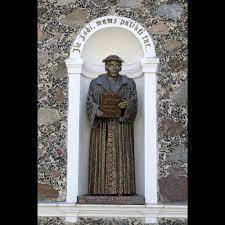
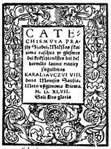
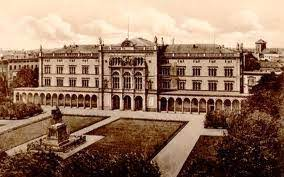

Martynas Mažvydas. Pirmoji lietuviška knyga
Pusiau pagoniškai tautai įteigti krikčionybę labiausiai buvo įmanoma per gimtąją kalbą. Pirmieji tai suprato Liuterio šalininkai. 1544 m. Prūsijos kunigaikštis Albrechtas Brandenburgietis. Karaliaučiuje įsteigė universitetą. 1546 m. jis į Karaliaučių pasikvietė Martyną Mažvydą - būsimą pirmosios lietuviškos knygos autorių.
Mažai žinoma apie Mažvydą iki jo atvykimo į Karaliaučių. Jis buvo susijęs su Abroamo Kulviečio kolegija Vilniuje, greičiausiai ten mokytojava.
Stebėtinai greitai - nespėjus praeiti dvejiem metams - Karaliaučiaus universitete M. Mažvydas įgijo teologijos mokslų bakolauro laipsnį. Todėl manoma, kad iki tol buvo mokęsis kitur. 1547 m. pasirodė Mažvydo parengta pirmoji lietuviška knyga Catechsmusa prasty Szadei, Mokslas skaitima raschta yr giesmes...
Knygą sudaro Lietuvos Didžiajai Kunigaikštystei skirta Lotyniška dedikacija, pratarmės lotynų it lietuvių kalbomis, elementorius, katekizmus, 11 giesmių su natomis. Lietuviška pratarmė yra ir pirmasis eiliuotas lietuviškas originalus kūrinys
|
 |  |  |
|---|---|---|---|